2024
Juin
Avril
- 20 — À son image de Jérôme Ferrari
- 06 — À la lumière du petit matin d’Agnès Martin-Lugand
- 06 — 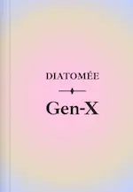 Gen-X de Diatomée
-
01 —
Action, poésie et comédie
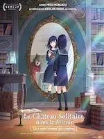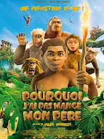Road House, Le château solitaire dans le miroir, Pourquoi j’ai pas mangé mon père
Mars
- 15 — Mon profil de personnalité actuel
-
15 —
Deux séries : comédie et drame
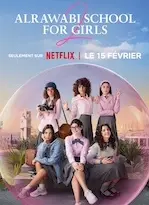Suburgatory, ♡ AlRawabi School for Girls
Février
-
11 —
Des mentors, de l’amour et un carnage
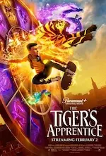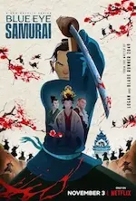♡ The Tiger’s Apprentice, The Underdoggs, Welcome to Valentine, Blue Eye Samurai
-
03 —
Une série et deux films français étonnants
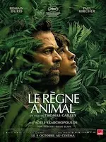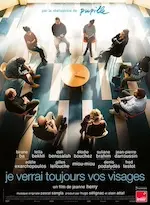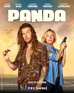Le règne animal , Je verrai toujours vos visages, Panda
Janvier
- 28 — 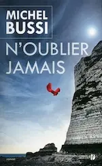 N'oublier jamais de Michel Bussi
-
28 —
De la magie et des rêves
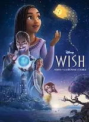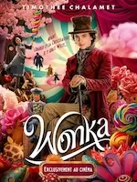Wish - Asha et la bonne étoile , Wonka
-
23 —
Magie, art, amour et délire complet
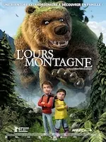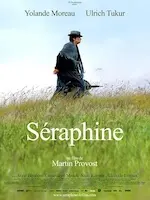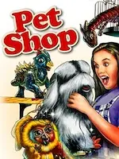L'ours montagne, Séraphine, ♡ C'était à Rome, La boutique fantastique
-
20 —
💖 Quatre courts-métrages d’animation
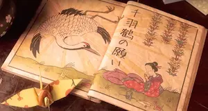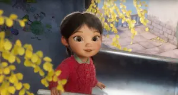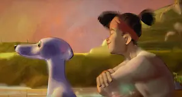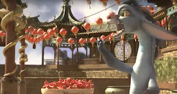♡ A folded wish, ♡ Windup, ♡ Run Totti run, ♡ Achoo
-
14 —
Films pas tip top
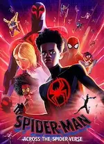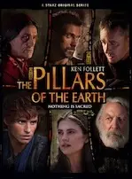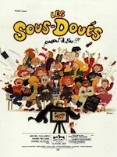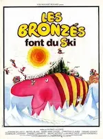Spider-man : Across the spider-verse, Les piliers de la Terre, I give my first love to you, Les sous-doués passent le bac, Les Bronzés font du ski
-
14 —
Trois films d’animation
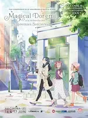♡ La maison des égarées, Ron débloque, ♡ Magical DoReMi : À la recherche des apprenties sorcières
-
07 —
Des questions sans réponse
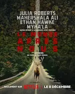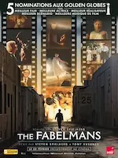Dream scenario, Le monde après nous, The Fabelmans
2023
Décembre
-
31 —
Noël, encore, action comique et romance foireuse
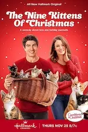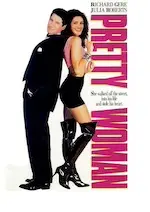Un château pour Noël, ♡ 9 chatons pour Noël, The family plan, Pretty Woman
-
30 —
💖 Quatre films excellents
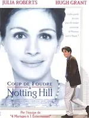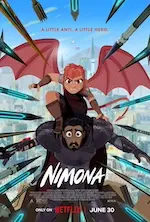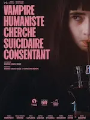♡ Coup de foudre à Notting Hill, ♡ Nimona, ♡ Vampire humaniste cherche suicidaire consendant, ♡ Le rêve de l’okapi
-
21 —
Autres films visionnés
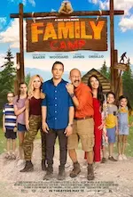L’ascension, ♡ A timeless Christmas, The family camp
-
17 —
Marathon ciné !
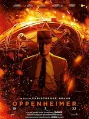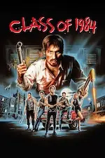Oppenheimer, Un stupéfiant Noël, Class 1984, Noël au chalet, In love and deep water, How to fall in love by Christmas